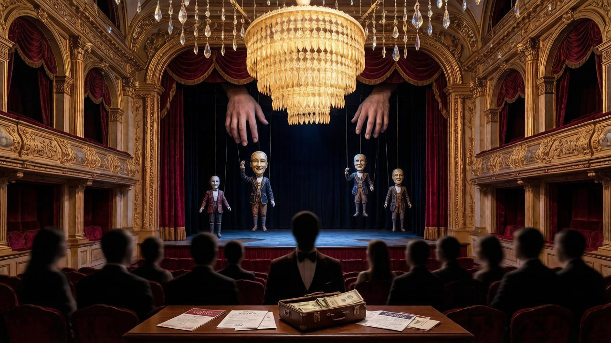
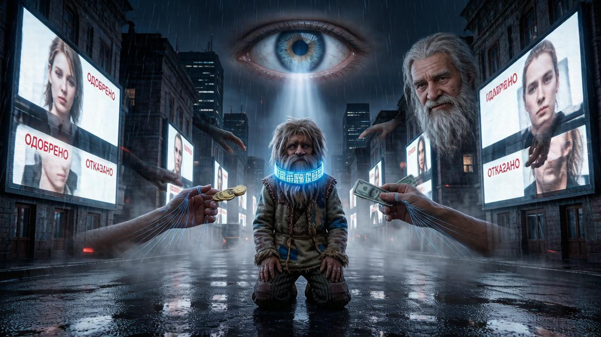

Die Show, in der uns die Rolle der Zuschauer zugewiesen wurde
Warum geht es dir schlecht? Beeil dich nicht mit der Antwort. Ich frage nicht nach der Müdigkeit nach der Arbeit, nicht nach dem Geld, das bis zum Zahltag nicht reicht, und nicht nach der Gesundheit, die manchmal versagt. Das alles ist verständlich und jedem bekannt. Ich frage nach etwas anderem — nach jenem vagen, schmerzenden Gefühl, das du morgens von dir schiebst, wenn du an die Decke starrst und nicht aufstehen willst. Es hat keinen Namen, aber es ist da. Und du weißt, wovon ich spreche.
Vielleicht liegt es daran, dass du alles richtig machst und trotzdem kein Ergebnis kommt. Du arbeitest, zahlst Steuern, befolgst die Gesetze, gehst zur Wahl — und fühlst trotzdem, dass nichts von dir abhängt. Dass die Entscheidungen, die dein Leben bestimmen, irgendwo da draußen getroffen werden, ohne dich und nicht für dich. Es ist, als spieltest du ein Spiel, dessen Regeln andere geschrieben haben, und dir wurde die Rolle eines Statisten zugewiesen. Nicken, applaudieren, nach Hause gehen. Und so im Kreis.
Vielleicht liegt es daran, dass man dir etwas verspricht und es dann vergisst. Alle paar Jahre kommen Menschen mit schönen Worten, bitten um dein Vertrauen, bekommen deine Stimme — und verschwinden. Sie kehren erst vor der nächsten Wahl zurück, mit neuen Versprechen. Du glaubst ihnen nicht mehr, gehst aber trotzdem hin, weil die Alternative — gar nicht zu gehen — noch schlimmer ist. So lebst du zwischen Enttäuschung und Gewohnheit. Und auch das ist keine Antwort auf die Frage, warum es dir schlecht geht.
Vielleicht liegt es daran, dass du spürst, wie der Raum der Freiheit schrumpft. Nicht scharf, nicht grob, sondern sanft und unmerklich. Erst wurde das Bargeld an einem Ort abgeschafft, dann an einem anderen. Dann hieß es, die digitale Geldbörse sei bequemer. Dann wurde erklärt, bestimmte Käufe müssten eingeschränkt werden — zu deiner eigenen Sicherheit. Du hast nicht bemerkt, wie du in einem System gelandet bist, in dem jeder deiner Schritte eine Spur hinterlässt und aus dem es kein Entkommen gibt. Das Halsband wird nicht mit Gewalt angelegt — es wird als Geschenk angeboten.
Oder vielleicht liegt es daran, dass du allein bist. Nicht im Sinne physischer Einsamkeit — um dich herum sind Menschen, Familie, Kollegen. Sondern im Sinne der Abwesenheit einer Gemeinschaft, in der deine Stimme etwas bedeutet, in der man dich hört, in der du keine Funktion bist, sondern ein Mensch. Wir haben verlernt, zusammen zu sein. Wir haben gelernt, Publikum zu sein. Schauen, scrollen, liken, kaufen. Aber nicht entscheiden. Nicht beeinflussen. Nicht etwas Gemeinsames aufbauen. Und daraus wächst innen eine Leere, die nichts füllt, egal wie viele Unterhaltungen das System dir unter die Nase schiebt.
Deshalb geht es dir schlecht. Nicht weil du schwach oder faul bist. Sondern weil du ein lebendiger Mensch bist in einem System, das in dir nur eine Ressource sieht. Weil deine Stimme nichts entscheidet, dein Geld dir nicht gehört und deine Freiheit eine Kulisse ist, hinter der längst Leere herrscht. Du spürst es, auch wenn du es nicht formulieren kannst. Und dieses Gefühl ist keine Krankheit. Es ist ein Signal. Es ist deine Menschlichkeit, die sich weigert, die Rolle des Zuschauers zu akzeptieren.
Dieses Buch ist keine Klage und keine Prophezeiung vom Weltuntergang. Es ist der Versuch zu verstehen: wie wir hierher gekommen sind, wer und warum das Halsband anzieht und vor allem — was man tun kann. Nicht morgen, nicht irgendwann, sondern jetzt. Denn es gibt einen Ausweg, und er besteht nicht darin, auf einen Retter zu warten oder auf einem Platz zu rebellieren. Er besteht darin, etwas anderes aufzubauen — von unten, gemeinsam, nach ehrlichen Regeln. Aber bevor wir über die Lösung sprechen, müssen wir das Problem ehrlich benennen. Damit werden wir uns befassen. Beginnen wir ganz am Anfang — mit der Show, in der uns die Rolle der Zuschauer zugewiesen wurde.
Kapitel 1
Theater des Absurden: Wie Wahlen zur Show wurden

Alles beginnt mit einem einfachen und ehrlichen Eingeständnis, das die Menschheit vor vielen Jahrhunderten machte: Das Volk kann sich nicht selbst regieren. Zu viele Menschen, zu unterschiedliche Interessen, zu wenig Zeit für Einigung. Also einigten wir uns: Wir wählen die, die für uns regieren werden. Alle paar Jahre kommen wir zum Wahllokal, setzen ein Kreuz auf den Stimmzettel, übergeben ihnen die Macht — und leben in Frieden. Die Idee war schön. Das Problem ist, dass der Mechanismus, der für die ehrliche Übergabe der Macht erfunden wurde, längst zu etwas anderem geworden ist.
Schau dir einen Wahlkampf unvoreingenommen an, und du siehst keinen Wettstreit der Programme, sondern eine Show. Slogans, Tränen in die Kamera, vorab inszenierte Skandale, Enthüllungen, die genau im richtigen Moment auftauchen. Es gewinnt nicht, wer den besseren Plan für das Land hat, sondern wer den besseren Regisseur, die lautere Stimme und mehr Geld für Werbung hat. Wir stimmen nicht für Ideen, sondern für ein Bild. Nicht für Inhalt, sondern für Verpackung. Und dann wundern wir uns, warum sich nach der Wahl nichts ändert. Die Antwort ist einfach: Weil wir nicht den gewählt haben, der unsere Probleme lösen würde, sondern den, der die Rolle schöner spielt.
Und jetzt schauen wir hinter die Kulissen dieses Theaters. In den Vereinigten Staaten ist Lobbying ein legaler Beruf. Eine Konzern beauftragt jemanden, der durch die Büros der Kongressabgeordneten geht und sie „überzeugt", richtig abzustimmen. Nicht mit Argumenten — mit Geld für die nächste Kampagne. Pharmafirmen zahlen Hunderte Millionen, damit die Medikamentenpreise nicht sinken. Waffenhersteller — damit das Militärbudget wächst. Und das ist keine Untergrundkorruption. Es ist ein offizielles Geschäft mit Büros, Websites und Jahresberichten. Alles transparent. Alles legal. Und genau das bestimmt, welche Gesetze verabschiedet und welche in den Ausschüssen für immer begraben werden.
Jemand wird sagen: Das ist das Problem eines Landes, bei uns ist es anders. Es ist nicht anders. Die Kulissen wechseln, aber die Essenz bleibt. Überall dort, wo Macht gekauft werden kann — durch direkte Zahlung oder über eine Kampagne — wird sie gekauft. Überall dort, wo eine Entscheidung von einer Person abhängt, bildet sich eine Schlange derer, die Ressourcen haben. Nicht weil alle Politiker käuflich sind, sondern weil das System so gebaut ist. Es belohnt die, die mit Geld umgehen können, und drängt die hinaus, die mit sauberen Absichten kamen. In ein, zwei Jahren wird ein sauberer Mensch derselbe wie seine Vorgänger. Oder er geht.
Das Bitterste hier ist nicht, dass man uns täuscht. Man kann nur täuschen, wer glaubt. Das Bitterste ist, dass wir selbst dieser Rolle zugestimmt haben. Wir sehen die Debatten wie eine Serie und diskutieren die Kandidaten wie Figuren. Wir warten auf einen „starken Führer", der alles in Ordnung bringt, statt zu fragen: Warum geben wir überhaupt jemandem das Recht, für uns zu entscheiden? Warum verschwindet unsere Stimme zwischen den Wahlen? Warum sitzen in den Ausschüssen, in denen wichtige Fragen entschieden werden, nicht wir, sondern die, die wir nie gewählt haben?
Die repräsentative Demokratie ist nicht als Idee gescheitert. Sie ist als Mechanismus gescheitert. Die Idee war, dass wir die Würdigen wählen und ihnen vertrauen. Der Mechanismus erwies sich als: Wir wählen den, der sich besser verkauft, und die Entscheidungen trifft das Geld. Das System verdaut jeden, der in es eintritt — und nur die Gesichter wechseln. Neue Gesichter, alte Regeln. Frische Versprechen, dasselbe Ergebnis. Das ist das Theater des Absurden: Alle wissen, dass das Stück inszeniert ist, aber sie spielen weiter ihre Rollen, weil keine Alternative in Sicht ist.
Aber es gibt eine Alternative. Und um sie zu sehen, müssen wir zuerst das Problem ehrlich bis zum Ende benennen. Nicht nur, dass Wahlen zur Show wurden. Sondern dass die Macht zwischen den Wahlen verschwindet — und mit ihr verschwinden auch wir. Darum geht es im nächsten Kapitel. Für jetzt merken wir uns das Wichtigste: Was Demokratie genannt wird, erweist sich immer häufiger als ein Stück mit bekanntem Ende. Und dieses Ende wurde nicht für uns und nicht von uns geschrieben.
Kapitel 2
Der verschwindende Wähler: Macht zwischen den Wahlen
Also sind die Wahlen vorbei. Die Fanfaren verstummten, die Versprechen verblassten, die Sieger hielten ihre Reden, die Verlierer erkannten die Niederlage an. Und es kam Stille. Jene Stille, in der der Wähler verschwindet. Niemand erinnert sich an ihn. Niemand spricht von ihm. Niemand wendet sich an ihn. Er wird wieder das, was er vor der Kampagne war — Hintergrund. Steuerzahler, Gesetzesvollstrecker, Ressourcenquelle. Und so wird es bis zum nächsten Mal bleiben, wenn man ihn wieder aus der Schublade holt, abstaubt, in eine schöne Idee kleidet und bittet, ein Kreuz zu machen.
Denk darüber nach: Wo bist du in dem Moment, in dem eine Entscheidung getroffen wird, die dein Leben verändern wird? Nicht im Saal. Nicht im Büro. Nicht im Ausschuss. Du bist bei der Arbeit, in der U-Bahn, in der Küche. Du liest die Nachricht, dass die Steuer erhöht, der Tarif angehoben, die Vergünstigung gestrichen, das Gesetz verabschiedet wurde. Du erfährst von der Entscheidung, wenn sie bereits getroffen ist. Man hat dich nicht gefragt. Man hat nicht diskutiert. Man hat dich nicht eingeladen, etwas zu sagen. Man hat es einfach mitgeteilt — wie man das Wetter mitteilt. Nicht weil man dich vergessen hat. Weil du in dieser Konstruktion nicht vorgesehen bist.
Zwischen den Wahlen geht die Macht in die Hände derer über, die niemand gewählt hat. Beamte, Berater, Experten, Ausschüsse, Kommissionen. Sie antworten dem Wähler nicht direkt. Man kann sie nicht mit einer einzigen Stimme nach Hause schicken. Sie sitzen jahrelang, jahrzehntelang auf ihren Plätzen, und ihre Entscheidungen häufen sich wie Sedimentschichten. Wir leben in einer Welt, die von diesen Entscheidungen gebaut wurde — und haben fast nie die Chance, sie anzufechten. Einmal alle vier Jahre wählen ist keine Macht. Es ist eine Illusion der Teilnahme.
Jemand wird einwenden: Wir haben die Möglichkeit, Petitionen zu schreiben, auf Demonstrationen zu gehen, zu fordern. Ja, die Möglichkeit existiert. Aber sie funktioniert als Sicherheitsventil, nicht als Hebel. Das System erlaubt, Dampf abzulassen, damit er den Kessel nicht sprengt. Du kannst schreiben — man wird dir höflich danken und mit einer förmlichen Antwort abspeisen. Du kannst auf die Straße gehen — man wird dich zerstreuen oder einfach aussitzen. Nichts wird sich ändern, weil der Mechanismus der Entscheidungsfindung nicht dort ist, wohin du dich wendest. Er ist geschlossen. Er ist innen. Und du bist nicht eingeladen.
Das ist das eigentliche Problem der repräsentativen Demokratie. Nicht, dass Wahlen gefälscht oder Kandidaten Lügner sind. Sondern dass du zwischen den Wahlen nicht als politisches Subjekt existierst. Du verwandelst dich in ein Objekt der Regierung. Man arbeitet mit dir wie mit dem Wetter: man berücksichtigt dich, prognostiziert dich, reguliert dich. Aber man fragt dich nicht. Und wenn du das erkennst, kommt jenes vage Gefühl, von dem wir im Prolog sprachen. Das Gefühl, dass du nicht in deinem eigenen Leben bist. Dass Entscheidungen für dich irgendwo da draußen getroffen wurden, wo du nicht warst und nicht sein wirst.
Kann man das von innen reparieren? Ehrlich — fast nicht. Man kann andere Abgeordnete wählen. Sie werden kommen, mit derselben Maschine kollidieren und entweder zerbrechen oder sich einfügen. Man kann die Partei wechseln. Parteien wechseln, die Bürokratie bleibt. Man kann Reformen fordern. Die Reformen werden von denselben Leuten geschrieben, die daran interessiert sind, dass sich nichts ändert. Das Einzige, was sich wirklich ändern wird, sind die Gesichter auf den Bildschirmen. Der Mechanismus bleibt derselbe. Und der Wähler wird am Tag nach der Wahl wieder verschwinden.
Deshalb muss die Frage anders gestellt werden. Nicht „wie repariert man dieses System", sondern „wie baut man ein anderes". Nicht „wie bringt man die Macht dazu, uns zu hören", sondern „wie macht man, dass die Macht uns gehört". Das klingt radikal, aber tatsächlich ist es einfach ein Wechsel der Optik. Wir haben zu lange versucht zu reparieren, was nicht in den Details, sondern im Fundament kaputt ist. Es ist Zeit zu fragen: Was, wenn die Teilnahme nicht auf dem Stimmzettel enden muss? Was, wenn die Stimme jeden Tag klingen kann und nicht einmal alle vier Jahre?
Dorthin bewegen wir uns. Aber bevor wir über die Lösung sprechen, müssen wir uns mit dem zweiten Halsband befassen — dem, das unmerklich enger wird, unter dem Vorwand der Bequemlichkeit. Denn selbst wenn wir unsere Stimme zurückgewinnen, aber die Kontrolle über unser Geld verlieren, wird die Freiheit sich als leer erweisen. Darum geht es im nächsten Kapitel.
Kapitel 3
Die digitale Leine: Warum Bequemlichkeit gefährlicher ist als Ketten

Erinnere dich, wie man dich überzeugte, von Papierdokumenten auf elektronische umzusteigen. Es ist bequem, sagten sie. Kein Anstehen mehr, keine Mappen mehr tragen, alles zur Hand, alles an einem Ort. Das war wahr. Aber es gab eine andere Seite, über die damals nicht gesprochen wurde. Heute kannst du keine Dienstleistung ohne Internet erhalten. Du kannst deine Identität nicht ohne Smartphone bestätigen. Du kannst kein Ticket kaufen, keinen Arzttermin buchen, kein Dokument bearbeiten, wenn das System nicht verfügbar ist. Die Bequemlichkeit wurde zur Abhängigkeit. Und dasselbe wird für Geld vorbereitet — nur ist der Maßstab größer.
Die digitale Zentralbankwährung wird als nächster Schritt des Fortschritts präsentiert. Keine Geldbörse tragen, kein Wechselgeld zählen, kein Bargeld verlieren, alle Transaktionen sind geschützt. Klingt vernünftig. Aber hinter Bequemlichkeit steckt immer etwas. Und hier ist dieses Etwas eine grundlegend neue Eigenschaft des Geldes, die es nie zuvor hatte. Bargeld ist eine Sache. Man kann es verstecken, verschenken, verlieren, verbrennen. Digitale Währung ist ein Eintrag in einem fremden Register. Und dieser Eintrag erwirbt, was Papier nie hatte: Programmierbarkeit.
Was bedeutet Programmierbarkeit? Es bedeutet, dass Geld Eigenschaften erwirbt, die es vorher nicht gab. Man kann ein Verfallsdatum setzen: nicht im Monat ausgegeben — verbrannt. Man kann das Gebiet einschränken: nur in deiner Stadt, deinem Bezirk, deinem Land ausgeben. Man kann einen Zweck zuweisen: diese Mittel — nur für Essen, jene — nur für Behandlung. Man kann es abschalten für eine unerwünschte Äußerung in den sozialen Medien. Das ist keine Fiktion. Das sind technische Möglichkeiten, die bereits existieren und ernsthaft diskutiert werden.
Stell dir vor: Der Staat entscheidet, dass du nicht loyal genug bist. Er steckt dich nicht ins Gefängnis — das wäre zu grob und zu auffällig. Er schneidet dir einfach den Zugang zum Konto ab. Oder beschränkt deine Käufe in deinem Bezirk. Oder streicht einen Teil deines Geldes als „ungenutzt". Alles legal, alles technisch möglich, alles mit Sorge um deine Sicherheit erklärt. Deshalb wird die digitale Währung ein elektronisches Halsband genannt. Es ist nicht in der Tasche — es ist an deinem Hals. Und du kannst es selbst nicht mehr abnehmen.
Das Gefährlichste hier ist die Freiwilligkeit am Eingang. Man zwingt dich nicht sofort. Man bietet Bequemlichkeit, Cashback, Schnelligkeit, Sicherheit. Ablehnen ist unbequem, zustimmen ist angenehm. Du trittst selbst ein, aus eigenem Willen, mit dem Gefühl, das Beste gewählt zu haben. Und dann entdeckst du, dass es keinen Weg zurück gibt. Bargeld ist verschwunden, Geschäfte sind auf digital umgestiegen, Dienstleistungen sind nur über das System verfügbar. Und plötzlich verstehst du: Um normal zu leben, musst du drinnen sein. Und drinnen bist du nicht mehr der Herr — du bist ein Nutzer, der abgeschaltet werden kann.
Wer dieses System besitzt, besitzt jeden. Nicht im Sinne, deine Käufe zu kennen, sondern im Sinne, dein Verhalten steuern zu können. Kaufen — kann man, kaufen dies — nicht. Dorthin gehen — kann man, dorthin — nicht. Schweigen — ist Pflicht. Das ist das digitale Konzentrationslager, von dem immer häufiger gesprochen wird. Nicht unbedingt mit Stacheldraht und Wachtürmen. Es reicht, dass Geld aufhört, dein zu sein. Es reicht, dass jeder deiner Schritte registriert wird und das System jeden Moment entscheiden kann, dass du den Zugang zu dem, was du verdient hast, nicht verdienst.
Und hier verbinden sich die beiden Halsbänder. Das erste ist politisch: Deine Stimme entscheidet nichts. Das zweite ist wirtschaftlich: Dein Geld gehört dir nicht. Zusammen schaffen sie totale Abhängigkeit. Du kannst Entscheidungen nicht beeinflussen — und du kannst das System, das diese Entscheidungen ausführt, nicht verlassen. Du bist eingesperrt. Nicht in einem Gefängnis, sondern in einem bequemen digitalen Raum, in dem alles funktioniert, solange du gehorsam bist. Und das ist weitaus beängstigender als offene Gewalt, weil es nicht wie Gewalt aussieht.
Aber es gibt einen Ausweg. Er besteht nicht darin, die Technologie aufzugeben — das ist unmöglich und unnötig. Er besteht darin, ein anderes System aufzubauen. In dem Geld nicht durch Versprechen, sondern durch Code geschützt ist. In dem die Stimme nicht gekauft, genommen oder abgeschaltet werden kann. In dem der Mensch wieder der Herr ist und nicht der Nutzer. Darum geht es in den nächsten Kapiteln. Für jetzt merken wir uns etwas Einfaches: Bequemlichkeit, für die man die Freiheit hergibt, hört auf, Bequemlichkeit zu sein. Sie wird zur Leine. Und je weicher sie aussieht, desto fester hält sie.
Kapitel 4
Neue Schläuche für alten Wein: Warum Technologie ohne neue Substanz nichts ändert
Bevor wir über die Lösung sprechen, muss erklärt werden, was ein DAO und eine Blockchain sind — in einfachen Worten, ohne Fachbegriffe. Eine Blockchain ist ein gemeinsames Kontobuch, das Tausende von Menschen gleichzeitig führen. Jeder Eintrag darin ist für alle sichtbar, und er kann nicht gelöscht oder gefälscht werden, weil eine Kopie bei jedem Teilnehmer gespeichert ist. Ein DAO — eine dezentrale autonome Organisation — ist eine Gemeinschaft, die nach Regeln lebt, die in dieses Kontobuch geschrieben sind. Kein Chef, kein Direktor, kein Abgeordneter. Es gibt Code — und es gibt Menschen, die ihm folgen. Die Regeln sind für alle gleich, und niemand kann sie allein ändern.
Es klingt wie ein Traum. Und genau so wird es verkauft. Aber hier müssen wir anhalten und genau hinschauen. Die ersten DAOs, die nach 2016 entstanden, versprachen Gleichheit, Transparenz, die Macht der Gemeinschaft. Was geschah in der Praxis? Große Token-Inhaber bekamen die entscheidende Stimme. Die Reichen wurden reicher. Die Einflussreichen — einflussreicher. Die Abstimmung wurde zur Auktion: Wer mehr Token hat, bestimmt die Regeln. Menschen, die für die Freiheit kamen, entdeckten, dass sie in dasselbe System geraten waren, nur mit einer anderen Oberfläche. Dasselbe Geld. Dieselbe Macht. Dieselbe Hierarchie.
Hier ist das Problem. Technologie an sich ist neutral. Eine Blockchain ist nur ein Werkzeug, wie ein Hammer. Man kann damit ein Haus bauen oder einen Kopf zerschlagen. Ein DAO ist nur eine Form der Organisation. Man kann Gleichheit hineinlegen oder Oligarchie. Und die meisten existierenden DAOs haben Letzteres hineingelegt. Sie nahmen die alten antihumanen Spielregeln — wo Kapital gewinnt, wo der Starke den Schwachen unterwirft, wo Macht gekauft wird — und übertrugen sie in die virtuelle Realität. Nichts hat sich geändert. Es sieht nur jetzt modern aus und wird mit einem modischen Wort genannt.
Stell dir eine alte Frau vor, die sich einer Schönheitsoperation unterzogen hat und jetzt wie Miss Universe aussieht. Äußerlich — jung, schön, strahlend. Innerlich — dieselbe alte Frau. Dieselben Krankheiten, dieselbe Müdigkeit, dieselbe Nähe zum Ende. Die Operation veränderte die Hülle, aber nicht die Essenz. Genauso kann eine Blockchain die Hülle einer Organisation verändern, aber wenn innen die alten Prinzipien, die alte Gier, die alte Ungleichheit bleiben — bekommen wir dieselbe Tyrannei, nur schön und verschlüsselt. Das Halsband wird digital, aber es bleibt ein Halsband.
In der Bibel gibt es die Worte Christi: „Man füllt auch nicht neuen Wein in alte Schläuche; sonst zerreißen die Schläuche, und der Wein wird verschüttet und die Schläuche verdorben. Sondern man füllt neuen Wein in neue Schläuche, so bleiben beide erhalten" (Matthäus 9,17). Der Gedanke ist genial und tief: Neuer Inhalt erfordert eine neue Form. Man kann keinen frischen Wein in alte, rissige Schläuche füllen — sie werden nicht halten, sie werden bersten, und alles geht verloren. Aber formulieren wir es anders, noch präziser für unser Thema: „Man füllt auch nicht alten Wein in neue Schläuche." Man kann die fortschrittlichste technologische Form bauen, aber wenn man innen alten, sauren Inhalt füllt — Gier, Hierarchie, Ungleichheit — werden die neuen Schläuche nicht retten. Sie werden einfach zu einer schönen Verpackung für altes Gift.
Deshalb können wir nicht einfach bestehende DAOs nehmen und sagen: „Seht, hier ist die Lösung." Sie lösen nicht. Sie wiederholen. Sie kopieren die alte Welt, nur in digitaler Form. Wir brauchen nicht nur neue Schläuche. Wir brauchen neuen Wein. Neue Substanz. Neue Prinzipien, die den Menschen wirklich über das Kapital stellen, Gleichheit über Einfluss, Gemeinschaft über den einzelnen Starken. Und hier beginnt das Schwierigste. Denn eine Blockchain zu bauen ist Ingenieurwesen. Aber neue Prinzipien zu bauen ist Arbeit der Seele und des Geistes, und sie geschieht nicht über Nacht.
Was also tun? Die Antwort wird in den folgenden Kapiteln kommen. Wir müssen nicht einfach die Technologie nutzen, sondern ihr Fundament selbst überdenken. Ein Mensch — ein Token, der nicht verkauft werden kann. Vier Gilden, von denen keine den ganzen Menschen absorbiert. Eine Wirtschaft von 49 zu 51, in der der Unternehmer einen Anreiz bekommt, aber keine Macht über Menschen. Das sind nicht nur neue Schläuche. Das ist der Versuch, neuen Wein zu machen. Aber bevor wir bauen, müssen wir ehrlich zugeben: Alter Wein in neuen Schläuchen ist das, was wir bereits gesehen haben. Und er ist sauer geworden.
Kapitel 5
Ein Mensch — eine Stimme: Wie Gleichheit strukturiert ist
Jetzt kommen wir zum Wichtigsten — dazu, wie das von innen funktioniert. Nicht in allgemeinen Worten, sondern Schritt für Schritt. Stell dir vor, du hast beschlossen einzutreten. Das Erste, was du tust, ist eine App auf dein Smartphone herunterzuladen. Du registrierst dich nicht auf einer Website, gibst keine Daten an eine Konzern — du erhältst ein Programm, das deine Identität bei dir speichert, nicht auf einem fremden Server. Dann — ein Formular und eine Video-Überprüfung. Das System muss sich überzeugen, dass du ein lebendiger Mensch mit einem Dokument bist, dass du einer bist und nicht zehn Konten einer Person. Das ist der Schlüsselmoment: Ohne die Einzigartigkeit der Person ist keine Gleichheit möglich.
Nach der Überprüfung erhältst du ein kaltes Krypto-Wallet — ein Gerät von der Größe eines USB-Sticks. Darin wird dein privater Schlüssel gespeichert. Das ist ein mathematischer Code, der bestätigt, dass die Handlung von dir und von niemandem sonst ausgeführt wurde. Der Schlüssel verlässt nie das Gerät. Selbst wenn du es an einen infizierten Computer anschließt, bleibt der Schlüssel drin. Niemand — weder die Entwickler, noch der Staat, noch Hacker — kann etwas in deinem Namen unterschreiben. Das ist kein Passwort, das gestohlen werden kann. Es ist deine digitale Unterschrift, die nicht gefälscht werden kann. So wird das Problem des Vertrauens gelöst: Du vertraust niemandem, du prüfst mit Mathematik.
Jetzt zum Wichtigsten — zu den Smart Contracts. Ein Smart Contract ist ein Programm, das Regeln automatisch ausführt, ohne menschliche Beteiligung. Stell dir ein Gesetzbuch vor, das sich selbst vollstreckt. Die Abstimmung begann — der Vertrag öffnet die Annahme der Stimmen. Die Abstimmung endete — der Vertrag schließt sie, zählt das Ergebnis und veröffentlicht es. Niemand kann eingreifen, drehen, neu zählen. Wenn die Regeln sagen, dass ein Token nicht auf einen anderen übertragen werden kann, dann kann er nicht übertragen werden. Wenn sie sagen, dass die Stimme delegiert und jederzeit zurückgeholt wird, dann wird es so sein. Code lügt nicht. Code ermüdet nicht. Code nimmt keine Bestechungsgelder.
Jeder Teilnehmer erhält einen Token. Und hier beginnt das, was unser Modell von allem unterscheidet, was zuvor war. Dieser Token kann nicht verkauft, gekauft, vererbt oder genommen werden. Der Smart Contract legt fest: Der Token ist an eine einzigartige Person gebunden und hat keinen Marktwert. Ein Milliardär kann nicht tausend Token kaufen. Ein Oligarch kann seine Stimme nicht an seinen Sohn weitergeben. Eine Konzern kann nicht die Stimmen seiner Angestellten aufkaufen. Ein Mensch — ein Token — eine Stimme. Das ist kein Slogan, das ist eine technische Eigenschaft des Systems. Sie hängt nicht vom guten Willen ab. Sie ist in den Code eingebaut und funktioniert automatisch.
Dann — die Delegation. Du bist nicht verpflichtet, jede Frage selbst zu verstehen. Du kannst deine Stimme an jemanden übertragen, dem du vertraust: einem Arzt — in medizinischen Fragen, einem Ingenieur — bei Infrastruktur, einem Lehrer — bei Bildung. Aber das ist keine Ablehnung der Stimme, sondern ihre vorübergehende Nutzung. Jederzeit, mit einem Klick, holst du die Stimme zurück. Die Delegation wird über einen Smart Contract formalisiert, der festhält: an wen, für wie lange, zu welchen Themen. Niemand kann deine Stimme mit Gewalt zurückhalten. Das unterscheidet sich grundlegend von Wahlen, bei denen du die Macht für Jahre abgibst und dann nichts tun kannst.
Die Regierung läuft über vier Gilden. Berufliche — nach Beschäftigung: Ärzte, Lehrer, Programmierer. Territoriale — nach Wohnort. Unternehmerische — nach Dienstort. Thematische — nach Interessen: Ökologie, Kultur, Wissenschaft, Sport. In jeder Gilde hast du eine Stimme. Das bedeutet, dass keine Rolle den ganzen Menschen absorbiert. Du bist gleichzeitig Bewohner, Spezialist, Angestellter und Mitglied einer Gemeinschaft. Jeder Teil des Lebens ist separat vertreten, und keiner kann die anderen unterwerfen. Das ist Schutz davor, dass Arbeit zum Gefängnis und der Bezirk zum Lager wird.
Alle Abstimmungen finden auf der Blockchain statt. Jede Stimme wird für immer aufgezeichnet. Du kannst jederzeit prüfen, wie du und wie andere abgestimmt haben, wer was vorgeschlagen hat, wer sich wofür ausgesprochen hat. Nicht nach den Wahlen, sondern in Echtzeit. Das ist keine geheime Abstimmung — es ist eine transparente. Denn Geheimnis ist dort nötig, wo man Repressalien fürchtet. Aber hier ist Repressalie unmöglich: Kein Mensch kann dir deine Stimme nehmen. Die Ergebnisse werden nicht gefälscht, weil sie nicht von einem Menschen, sondern von Code gezählt werden. Das Ergebnis kann nicht umgeschrieben werden, weil eine Kopie der Blockchain bei Tausenden von Teilnehmern gleichzeitig gespeichert ist.
Schließlich das Wichtigste: In diesem System gibt es keine Chefs. Es gibt Code, der für alle gleich ist. Es gibt eine Gemeinschaft, die Entscheidungen trifft. Es gibt dich — mit einer gleichen Stimme, mit einem geschützten Wallet, mit der Möglichkeit, jeden Tag Einfluss zu nehmen und nicht einmal alle vier Jahre. So sieht Gleichheit aus, nicht in Worten, sondern in der Technik. Kein Versprechen, sondern Architektur. Kein Glaube an die Ehrlichkeit der Macht, sondern die Abwesenheit einer Macht, der man vertrauen müsste. Darum geht es im nächsten Kapitel: Wie dieses System eine Wirtschaft schafft, in der man Unternehmer sein kann, aber nicht Herr über Menschen werden kann.
Kapitel 6
49 und 51: Eine Wirtschaft, in der niemand Herr werden kann
Jetzt sprechen wir über Geld. Denn jedes System, so schön es auch sei, bricht zusammen, wenn ihm eine ungerechte Wirtschaft zugrunde liegt. Wir sind an eine Welt gewöhnt, in der der Besitzer eines Unternehmens der Herr, der Aktionär der Gebieter und der Angestellte eine Ressource ist. Wo die einen Macht und die anderen nur Pflichten haben. Wo der Gewinn nach oben fließt und das Risiko unten bleibt. Unser Modell schlägt etwas anderes vor. Und es beginnt mit einem einfachen Prinzip: Der Besitzer, der Aktionär und der Angestellte haben je einen Token. Eine Stimme. Sie sind gleich.
Stell dir ein Café vor. Sein Besitzer investiert Geld, Zeit, Seele. Er riskiert, er entwickelt, er stellt ein. Er hat einen Anreiz — und das ist richtig. Deshalb erhält er 49% des Nettogewinns. Das ist seine Belohnung für Arbeit, Risiko, unternehmerischen Mut. Er kann wachsen, neue Filialen eröffnen, in Ausstattung investieren, das Produkt verbessern. Aber 51% gehen nicht an ihn. Dieses Geld fließt in den Volkswohlfahrtsfonds — einen gemeinsamen Topf, aus dem der Grundkonsumkorb für alle finanziert wird: Nahrung, Wohnung, Gesundheit, Bildung.
Warum 49 und nicht 50 oder 40? Weil 49% ausreichen, um Unternehmer zu sein, aber nicht ausreichen, um Herr über Menschen zu werden. Der Besitzer kann nicht so viel anhäufen, dass er die Gemeinschaft überwältigt. Er kann keine Stimmen kaufen, weil Token nicht verkäuflich sind. Er kann keine Bedingungen diktieren, weil seine Stimme der Stimme der Putzfrau gleich ist. Er bleibt wichtig, respektiert, wohlhabend — aber nicht allmächtig. Das ist ein Gleichgewicht, das weder in eine Gleichmacherei abrutschen lässt noch in eine Rückkehr zur Oligarchie. Die Wirtschaft wird nicht ehrlich, weil jemand gütig ist, sondern weil der Code so gebaut ist.
Und jetzt — das Wichtigste, das direkt gesagt werden muss. Der Besitzer des Cafés hat einen Token. Der Aktionär, der Geld investiert hat, hat einen Token. Der Barista am Tresen hat einen Token. Die Putzfrau, die den Boden wischt, hat einen Token. Alle sind im Stimmrecht gleich. Aber alle sind auch anonym. Das System weiß, dass jeder von ihnen ein einzigartiger lebendiger Mensch mit Dokument ist. Es weiß nicht, wer genau. Es kennt nicht den Namen, nicht die Adresse, nicht die Position. Nur — ein Mensch. Einer. Mit einer Stimme.
Was bedeutet das in der Praxis? Dass niemand erfahren kann, wie der Besitzer abgestimmt hat. Niemand kann berechnen, wer vorgeschlagen hat, die Regeln zu ändern. Niemand kann nachverfolgen, wer den Gesetzentwurf unterstützt und wer sich widersetzt hat. Die Abstimmung ist transparent im Ergebnis, aber anonym in der Urheberschaft. Das Ergebnis ist für alle sichtbar, aber kein Gesicht steht dahinter. Das ist Schutz vor Druck. Vor Rache. Vor Bestechung. Davor, dass ein Chef erfährt, wie ein Untergebener abstimmt, und ihn entlässt. Davor, dass ein Nachbar erfährt, wie sein Nachbar abstimmt, und eine Verfolgung beginnt.
Im gewöhnlichen Leben scheint das unmöglich. Wir sind daran gewöhnt, dass die Macht alles über uns weiß und wir nichts über die Macht. Hier ist es umgekehrt. Das System weiß nicht, wer du bist. Es weiß nur, dass du ein Mensch bist, dass du einer bist und dass du eine Stimme hast. Deine Käufe werden nicht verfolgt. Deine Abstimmungen sind nicht mit deinem Namen verknüpft. Deine Vorschläge sind nicht von dir unterschrieben. Du beeinflusst — bleibst aber unsichtbar. Das ist keine Anonymität um der Anonymität willen. Das ist Anonymität als Bedingung der Freiheit. Ohne sie wird Gleichheit zur Fiktion: Wer weiß, kann immer den unter Druck setzen, den er kennt.
Deshalb funktioniert diese Wirtschaft. Der Besitzer erhält 49% — und ist zufrieden. Der Aktionär erhält Dividenden — und ist ruhig. Der Angestellte erhält ein würdiges Gehalt und den Grundkorb — und ist geschützt. Aber keiner von ihnen kann sich über die anderen erheben. Niemand kann die Stimme eines anderen kaufen. Niemand kann erfahren, wer wie abgestimmt hat. Das System ist so gebaut, dass Gier sich nicht auszahlt und Ehrlichkeit nicht bestraft wird. Nicht weil Menschen Engel geworden sind, sondern weil der Code ihnen nicht erlaubt, Dämonen zu werden.
Und hier muss das Wichtigste gesagt werden. Der grundlegende Konsumkorb ist kein Almosen, keine Wohltätigkeit, keine Sozialleistung, um die man betteln muss. Es ist das, was dem Menschen durch die Tatsache seiner Geburt gehört. Nicht weil er es verdient hat, nicht weil er nützlich ist, nicht weil er loyal ist. Sondern weil er ein Mensch ist. Jeder der acht Milliarden Menschen, die auf der Erde leben, hat das Recht auf Nahrung, Wärme, Obdach, Schutz vor Hunger und Kälte, Sicherheit bei Katastrophen. Das ist kein Bonus für gutes Verhalten. Es ist die Ausgangsbedingung des Lebens, der Mehrheit genommen und von einer Minderheit angeeignet.
Denk darüber nach, was das ändert. Ein Mensch, der weiß, dass er nicht verhungern wird, im Winter nicht erfriert, nicht ohne Dach über dem Kopf bleibt — das ist ein anderer Mensch. Er fürchtet nicht, die Arbeit zu verlieren, weil er nicht das Leben verlieren wird. Er erträgt keine Demütigungen, weil er nicht von fremder Gnade abhängt. Er verkauft seine Stimme nicht für ein Stück Brot, weil das Brot hat er schon. Er wird frei nicht in Worten, sondern in Taten. Und dann erinnert er sich, von wem er geschaffen wurde. In Psalm 81,6 heißt es: „Ich habe gesagt: Ihr seid Götter und allzumal Kinder des Höchsten." Nicht Könige, nicht Auserwählte, nicht Reiche — alle. Jeder Mensch ist nach dem Bild und Gleichnis des Höchsten geboren und verdient daher nicht Überleben, sondern Leben.
Das bedeutet es, ein Mensch mit großem M zu sein. Nicht der, der viel verdient hat, nicht der, der die Karriereleiter erklommen hat, nicht der, der im Wettbewerb gesiegt hat. Sondern der, der sich seiner ursprünglichen Würde bewusst ist und nicht zulässt, dass sie ihm genommen wird. Der Grundkorb ist kein wirtschaftlicher Mechanismus. Er ist die Anerkennung dessen, dass der Mensch keine Ressource, keine Funktion, keine Arbeitskraft ist. Er ist die materielle Grundlage dafür, dass er sich aufrichten und erinnern kann, wer er ist. Ohne ihn bleiben alle Reden über Freiheit Worte: Ein Hungernder denkt nicht an Höheres, er hat keine Zeit. Ein Satter — kann. Ein Geschützter — wagt.
Und hier verbindet sich alles. Die Wirtschaft von 49 zu 51 ist nicht einfach eine Weise, den Gewinn gerecht zu verteilen. Sie ist eine Weise, dem Menschen seine ursprüngliche Position zurückzugeben. Wenn jeder den Grundkorb hat, verkauft niemand seine Stimme für Essen. Wenn jeder einen Token hat, kauft niemand Macht für Geld. Wenn alle anonym sind, fürchtet niemand Rache. Und wenn der Mensch nicht fürchtet, erinnert er sich, dass er ein Kind des Höchsten ist und kein Rädchen im System. Dann verliert Gier ihren Sinn, und Ehrlichkeit wird natürlich. Nicht weil jemand es erzwungen hat. Sondern weil der Mensch endlich er selbst geworden ist. Darum geht es im nächsten Kapitel — dem Berater, der nicht diktiert, sondern zeigt.
Kapitel 7
Ein Berater, kein Diktator: KI, die Konsequenzen zeigt
Wir sind zum letzten Element der Konstruktion gekommen — zur künstlichen Intelligenz. Und hier muss man äußerst vorsichtig sein, weil man heute über KI entweder mit Entsetzen oder mit naiver Begeisterung spricht. Die einen malen Bilder einer Maschinenrevolte und der Versklavung der Menschheit. Die anderen versprechen, dass KI alle Probleme lösen und uns ins Paradies führen wird. Beides sind Extreme. In unserem Ökosystem hat KI eine konkrete, streng begrenzte Rolle. Sie regiert nicht. Sie stimmt nicht ab. Sie entscheidet nicht. Sie ist ein Berater-Visualisierer. Ihre Aufgabe ist es, Konsequenzen zu zeigen, nicht für uns zu wählen.
Stell dir vor, du schlägst einen Gesetzentwurf vor. Nehmen wir an, eine Straße durch einen Wald zu bauen. Im üblichen System stimmst du blind ab: Jemand sagt, das ist Entwicklung, jemand sagt, das ist Zerstörung der Natur. Du wählst eine Seite auf der Grundlage von Emotionen, Slogans, Vertrauen in den Sprecher. Und dann, zehn Jahre später, entdeckst du Konsequenzen, die niemand vorausgesehen hat. Hier ist es anders. Du reichst einen Vorschlag ein — und die KI zeigt dir ein Modell. Hier ist, was mit dem Wald geschieht. Hier ist, wie sich die Luft verändert. Hier ist, wie viel die Instandhaltung der Straße kosten wird. Hier ist, welche Tiere verschwinden. Hier ist, wer besser und wer schlechter dran sein wird.
Das ist keine Prophezeiung und kein Befehl. Es ist eine Simulation. Die KI sagt nicht: „Tu das" oder „Tu das nicht". Sie sagt: „Hier ist, was geschehen wird, wenn du das tust. Hier ist, was geschehen wird, wenn du anders handelst. Hier ist, was geschehen wird, wenn du nichts tust." Die Zukunft wird als Gegenwart gezeigt — anschaulich, klar, mit Zahlen und Bildern. Du siehst das ganze Bild und nicht ein Fragment, das dir jemand vorteilhaft präsentiert. Und erst danach stimmst du ab. Bewusst. Mit offenen Augen. Nicht auf das Wort eines anderen vertrauend, sondern mit eigenen Augen sehend.
Jemand wird fragen: Wird die KI uns nicht durch diese Simulationen manipulieren? Schließlich kann der, der das Modell baut, es so drehen, dass es das gewünschte Ergebnis zeigt. Die Antwort ist einfach: Die KI in unserem System ist offen. Ihre Algorithmen sind für alle sichtbar. Ihre Daten sind überprüfbar. Ihre Modelle können bestritten, alternative vorgeschlagen, diskutiert werden. Sie ist keine Blackbox, sondern ein transparentes Instrument. Und vor allem — sie hat kein Stimmrecht. Ihre Empfehlungen entscheiden nichts. Die Menschen entscheiden. Anonym, gleichberechtigt, je ein Token. Die KI liefert nur Information — die Entscheidung bleibt bei uns.
Hier ist der grundlegende Unterschied zwischen einem Berater und einem Diktator. Ein Diktator sagt: „Tu das, weil ich es besser weiß." Ein Berater sagt: „Hier sind die Optionen, hier sind ihre Konsequenzen, wähle selbst." Ein Diktator verbirgt Informationen, um zu regieren. Ein Berater offenbart sie, damit du dich selbst regieren kannst. Ein Diktator fürchtet Fragen. Ein Berater beantwortet sie. Die ganze Kraft der KI in unserem Ökosystem liegt nicht darin, dass sie klüger ist als wir, sondern dass sie schneller rechnet, weiter sieht und nicht ermüdet. Aber die Ziele bestimmen wir. Die Werte wählen wir. Die Zukunft bauen wir. Sie zeigt nur den Weg.
Stell dir vor, wie sich die Qualität der Entscheidungen ändert. Heute werden Gesetze auf der Grundlage von Lobbying, Emotionen, momentanem Gewinn verabschiedet. Morgen — auf der Grundlage simulierter Konsequenzen. Heute verspricht ein Politiker, eine Steuer zu senken, um den Wählern zu gefallen, und ein Jahr später kracht das Budget aus allen Nähten. Morgen sieht der Wähler selbst: Hier ist, wer besser und wer schlechter dran sein wird, hier ist, was mit Krankenhäusern, Schulen, Straßen geschieht. Und stimmt ab, den Preis verstehend. Das macht uns nicht unfehlbar. Aber es macht uns sehend. Und ein sehender Mensch geht nicht dorthin, wo ihn ein Abgrund erwartet.
Und hier schließt sich die ganze Konstruktion. Wir haben Gleichheit — ein Mensch, eine Stimme. Wir haben Schutz — Anonymität und einen unantastbaren Token. Wir haben Wirtschaft — 49 zu 51, der Grundkorb von Geburts wegen. Wir haben Technologie — Blockchain und Smart Contracts. Und wir haben einen Berater — KI, die nicht diktiert, sondern zeigt. All das zusammen ist keine Utopie. Es ist eine Ingenieursaufgabe. Schwierig, aber lösbar. Und sie muss nicht morgen, sondern jetzt gelöst werden. Denn die alte Welt kracht aus allen Nähten, und die neue ist noch nicht gebaut. Darum geht es im Epilog. Darüber, wo man beginnt und was jeder von uns tun sollte.
Epilog
Die Morgendämmerung beginnt mit einem
Wir haben den ganzen Weg zurückgelegt — von der Diagnose zur Lösung. Wir sahen, wie Wahlen zum Theater wurden, wie der Wähler zwischen den Abstimmungen verschwindet, wie die digitale Leine unter dem Schein der Bequemlichkeit enger wird. Wir untersuchten, warum alte DAOs alte Regeln kopieren, und fanden, dass wir neuen Wein brauchen, nicht nur neue Schläuche. Wir beschrieben, wie Gleichheit, Wirtschaft und der KI-Berater strukturiert sind. Jetzt — der ehrlichste Teil. All diese Technologien existieren. Aber keine von ihnen ist zu dem zusammengesetzt, was wir brauchen.
Blockchain existiert — aber sie wird für Spekulationen und Memecoins genutzt. Smart Contracts existieren — aber Finanzpyramiden werden in sie geschrieben. Kryptografie existiert — aber sie schützt fremde Vermögen. Künstliche Intelligenz existiert — aber sie dient Konzernen und Werbung. All das ist verstreut wie Bausatzteile in verschiedenen Kisten. Einige Technologien sind fertig und funktionieren — sie müssen genommen werden. Einige müssen nachjustiert, verfeinert, an neue Prinzipien angepasst werden. Und einige — von Grund auf neu geschrieben, weil nichts Ähnliches bisher geschaffen wurde. Das ist nicht die Aufgabe eines Menschen. Es ist Arbeit für Tausende.
Aber bevor man zusammensetzt, muss man aufwecken. Alle Technologien der Welt sind nutzlos, wenn die Idee die Menschen nicht erreicht. Heute schlafen Milliarden. Sie spüren, dass etwas nicht stimmt, aber sie wissen nicht, was genau. Sie sehen die Symptome — Armut, Abhängigkeit, Ohnmacht —, aber sie sehen nicht die Diagnose. Unsere Aufgabe ist es, Augen zu öffnen. Nicht aufzwingen, nicht schreien, nicht erschrecken. Sondern erklären. Ruhig, klar, zugänglich. Jedem, der bereit ist zu hören. Denn es ist gesagt: Ein wenig Sauerteig durchsäuert den ganzen Teig. Wir müssen nicht auf Millionen warten. Einige, die verstanden haben und es weitertragen, genügen.
Verbreite die Idee der Volkssouveränität mit allen verfügbaren Mitteln. Nicht nur mit Artikeln — mit Küchengesprächen, Social-Media-Posts, Videos, Podcasts, Gedichten, Liedern, Zeichnungen. In jeder Sprache, die deinem Gesprächspartner verständlich ist. Denn eine Idee ist kein Text, sondern ein Funke. Sie lebt, solange sie weitergegeben wird. Schweigen tötet sie schneller als jedes Verbot. Sprich, diskutiere, erkläre, beantworte Fragen. Fürchte nicht den Spott — fürchte die Stille. Es war die Stille, die die alte Welt so lange an Ort und Stelle bleiben ließ.
Und jetzt — der Aufruf. Wenn du Code schreibst — schließe dich an. Wenn du Ökonom, Jurist, Soziologe, Ingenieur, Designer, Psychologe, Lehrer bist — du wirst gebraucht. Wenn du erklären, organisieren, inspirieren kannst — wirst du ebenfalls gebraucht. Du musst kein Genie sein. Du musst jemand sein, der entschieden hat, dass es genug ist, Zuschauer zu sein. Dieses Projekt ist nicht für ein Land, nicht für ein Volk, nicht für eine Epoche. Es ist die globale Sache aller Zeiten und Völker, hier und jetzt zusammengebracht. Und wenn du innerlich eine Antwort spürst — dann bist du bereits ein Teil davon.
Die Morgendämmerung beginnt nicht mit Millionen. Sie beginnt mit einem Menschen, der aufwachte und einen zweiten aufweckte. Der zweite weckte einen dritten. Und so weiter — bis die Dunkelheit zurückweicht. Wir versprechen nicht, dass es leicht wird. Wir versprechen nicht, dass es schnell geht. Aber wir wissen: Das alte System stürzt von selbst zusammen, weil es unmenschlich ist. Und das neue wird von Menschen gebaut, die sich erinnert haben, dass sie Götter sind, Kinder des Höchsten. Beginne mit etwas Kleinem. Heute. Mit dieser Seite. Mit einem Gespräch. Die Morgendämmerung ist schon nah.